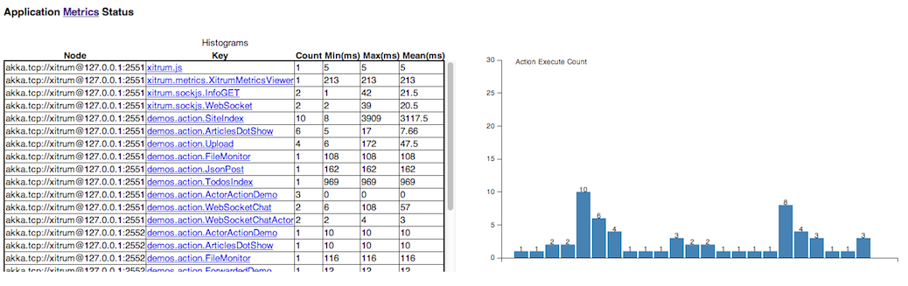

Метрики¶
Xitrum собирает информацию об использовании памяти, CPU и информацию об использовании контроллеров каждой ноды вашего Akka кластера. Эти данные публикуются в JSON формате. Xitrum так же позволяет публиковать ваши метрики.
Эти метрики базируются на библиотеке Coda Hale Metrics.
Агрегирование метрик¶
Память и CPU¶
Информация по памяти и CPU собирается с помощью NodeMetrics системы актров каждой ноды.
Память:

CPU: Количество процессоров и средняя загрузка

Метрики контроллера¶
Xitrum собирает состояния выполнения каждого контроллера в формате гистограммы. Вы можете узнать сколько раз контроллер запускался, время выполнения для не асинхронных запросов.
Последнее время выполнения конкретного контроллера:

Дополнительные метрики¶
Дополнительные метрики вы можете собирать самостоятельно. Подробнее про использование читайте Coda Hale Metrics и реализация на Scala. Используйте пакет xitru.Metrics, в нем gauge, counter, meter, timer и histogram.
Пример таймера:
import xitrum.{Action, Metrics}
import xitrum.annotation.GET
object MyAction {
lazy val myTimer = Metrics.timer("myTimer")
}
@GET("my/action")
class MyAction extends Action {
import MyAction._
def execute() {
myTimer.time {
// Задача время выполнения которой вы хотите замерить
...
}
...
}
}
Публикация метрик¶
Xitrum публикует последние значения метрики в JSON формате через определенный интервал времени. Этот интервал имеет не постоянное значение и может меняться.
Информация о памяти:
{
"TYPE" : "heapMemory",
"SYSTEM" : akka.actor.Address.system,
"HOST" : akka.actor.Address.host,
"PORT" : akka.actor.Address.port,
"HASH" : akka.actor.Address.hashCode,
"TIMESTAMP" : akka.cluster.NodeMetrics.timestamp,
"USED" : Number as byte,
"COMMITTED" : Number as byte,
"MAX" : Number as byte
}
Информация о CPU:
{
"TYPE" : "cpu",
"SYSTEM" : akka.actor.Address.system,
"HOST" : akka.actor.Address.host,
"PORT" : akka.actor.Address.port,
"HASH" : akka.actor.Address.hashCode,
"TIMESTAMP" : akka.cluster.NodeMetrics.timestamp
"SYSTEMLOADAVERAGE" : Number,
"CPUCOMBINED" : Number,
"PROCESSORS" : Number
}
MetricsRegistry использует metrics-json для разбора JSON файла.
Просмотр метрик через Xitrum¶
Xitrum предоставляет стандартный способ просмотра метрик по ссылке /xitrum/metrics/viewer?api_key=<смотри xitrum.conf>. По этой ссылке доступны графики представленные выше. Графики созданы с использованием D3.js.
Ссылка может быть сформирована следующим образом:
import xitrum.Config
import xitrum.metrics.XitrumMetricsViewer
url[XitrumMetricsViewer]("api_key" -> Config.xitrum.metrics.get.apiKey)
Jconsole¶
Метрики можно просматривать через jconsole используя JVM Reporter.

Запуск:
import com.codahale.metrics.JmxReporter
object Boot {
def main(args: Array[String]) {
Server.start()
JmxReporter.forRegistry(xitrum.Metrics).build().start()
}
}
Затем используйте jconsole.
Просмотр метрик сторонними средствами¶
Метрики публикуются как ссылка SockJS xitrum/metrics/channel в формате JSON. jsAddMetricsNameSpace - шаблон JavaScript кода который предоставляет Xitrum для установки соединения.
Реализуйте свой собственный JSON обработчик используя метод initMetricsChannel.
Пример контроллера:
import xitrum.annotation.GET
import xitrum.metrics.MetricsViewer
@GET("my/metrics/viewer")
class MySubscriber extends MetricsViewer {
def execute() {
jsAddMetricsNameSpace("window")
jsAddToView("""
function onValue(json) {
console.log(json);
}
function onClose(){
console.log("channel closed");
}
window.initMetricsChannel(onValue, onClose);
""")
respondView()
}
}
Хранения метрик¶
Для экономии памяти, Xitrum не хранит старые значения метрик. Если вы хотите хранить эти значения, вам передается реализовать собственный обработчик.
Например:
import akka.actor.Actor
import xitrum.metrics.PublisherLookUp
class MySubscriber extends Actor with PublisherLookUp {
override def preStart() {
lookUpPublisher()
}
def receive = {
case _ =>
}
override def doWithPublisher(globalPublisher: ActorRef) = {
context.become {
// When run in multinode environment
case multinodeMetrics: Set[NodeMetrics] =>
// Save to DB or write to file.
// When run in single node environment
case nodeMetrics: NodeMetrics =>
// Save to DB or write to file.
case Publish(registryAsJson) =>
// Save to DB or write to file.
case _ =>
}
}
}